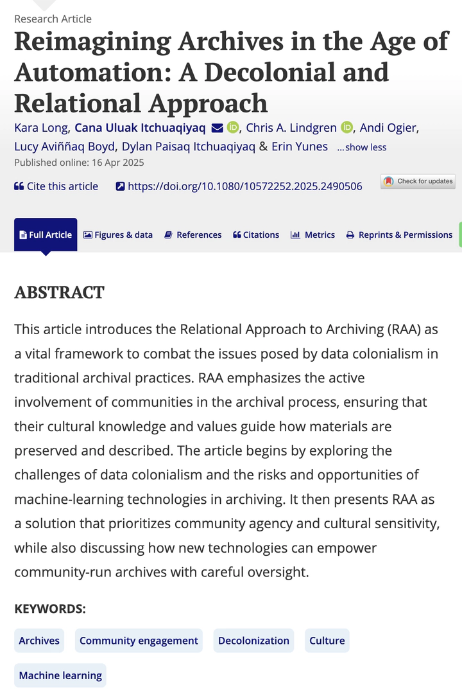

New article! "Reimagining Archives in the Age of Automation"
Posting date:

Great news! Another of our co-authored academic articles with Aviññaq and Paisaq was published online today!
📘 Long, K., Itchuaqiyaq, C. U., Lindgren, C. A., Ogier, A., Boyd, L. A., Itchuaqiyaq, D. P., & Yunes, E. (2025). Reimagining Archives in the Age of Automation: A Decolonial and Relational Approach. Technical Communication Quarterly, 1–17. https://doi.org/10.1080/10572252.2025.2490506.
- Abstract: This article introduces the Relational Approach to Archiving (RAA) as a vital framework to combat the issues posed by data colonialism in traditional archival practices. RAA emphasizes the active involvement of communities in the archival process, ensuring that their cultural knowledge and values guide how materials are preserved and described. The article begins by exploring the challenges of data colonialism and the risks and opportunities of machine-learning technologies in archiving. It then presents RAA as a solution that prioritizes community agency and cultural sensitivity, while also discussing how new technologies can empower community-run archives with careful oversight.
- 50 free copies for those with no academic library access
- Link to article for those with academic access
We hope it moves us all another step in this movement toward rematriation.